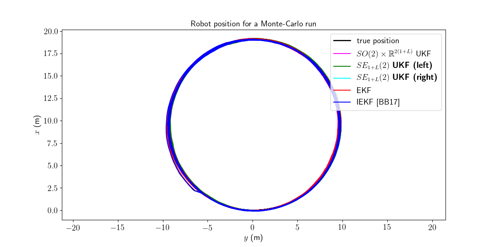
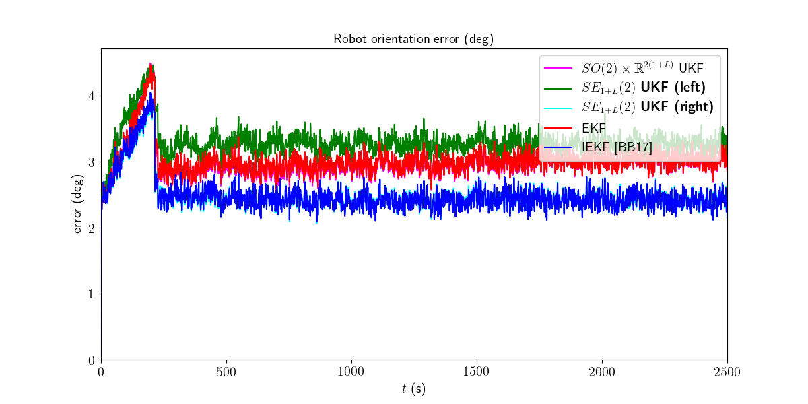
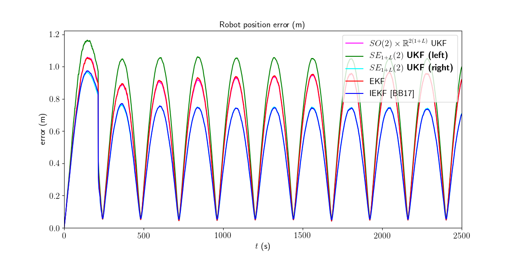
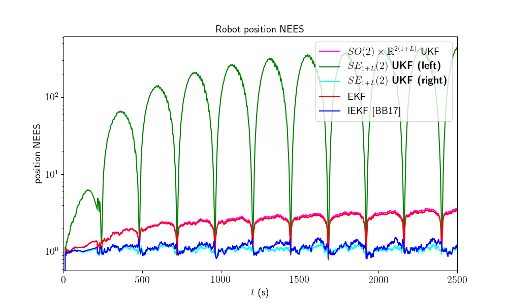

Note
Click here to download the full example code
2D Robot SLAM - Benchmark¶
Goals of this script:
implement three different UKFs on the 2D robot SLAM problem.
(re)discover computational alternatives for performing UKF:
when Jacobian are (partially) known.
or when only a part of the state is involved in a propagation step.
or when only a part of the state is involved in a measurement.
design the Extended Kalman Filter (EKF) and the Invariant Extended Kalman Filter (IEKF) [BB17] for the given problem.
compare the different algorithms with Monte-Carlo simulations.
We assume the reader is already familiar with the considered problem described in the related example.
We previously designed an UKF with a standard uncertainty representation. An advantage of the versatility of the UKF is to quickly implement, test, and compare UKF with different uncertainty representation. Indeed, for the given, three different UKFs emerge, defined respectively as:
The state is embedded in \(SO(2) \times \mathbb{R}^{2(1+L)}\), as in the example, where:
the retraction \(\varphi(.,.)\) is the \(SO(2)\) exponential map for orientation and the standard vector addition for robot and landmark positions.
the inverse retraction \(\varphi^{-1}(.,.)\) is the \(SO(2)\) logarithm for orientation and the standard vector subtraction for robot and landmark positions.
The state is embedded in \(SE_{1+L}(2)\) with left multiplication, i.e.
the retraction \(\varphi(.,.)\) is the \(SE_{1+L}(2)\) exponential, where the state multiplies on the left the error \(\boldsymbol{\xi}\).
the inverse retraction \(\varphi^{-1}(.,.)\) is the \(SE_{1+L} (2)\) logarithm.
The state is embedded in \(SE_{1+L}(2)\) with right multiplication, i.e.
the retraction \(\varphi(.,.)\) is the \(SE_{1+L}(2)\) exponential, where state multiplies on the right the error \(\boldsymbol{\xi}\).
the inverse retraction \(\varphi^{-1}(.,.)\) is the \(SE_{1+L} (2)\) logarithm.
it corresponds to the Invariant Extended Kalman Filter (IEKF) recommended in [BB17]. We have theoretical reasons to choose this uncertainty representation as it naturally leads to resolve the consistency issue of traditional EKF-SLAM.
Note
\(SE_{1+L}(2)\) exponential and logarithm are similar as their \(SE(2)\) counterpart, see documentation.
Import¶
We import a specific EKF for performing state augmentation and update with
different measurement dimension. Indeed, in 2D SLAM, unknown landmarks are
progressively added to the state the first time the landmark is observing. And
each update consists of observed only visible landmarks. Both operations are
also handled in our advanced JUKF.
from ukfm.model.slam2d import EKF
from ukfm import SO2, JUKF
from ukfm import SLAM2D as MODEL
import numpy as np
import ukfm
ukfm.set_matplotlib_config()
Simulation Setting¶
We compare the different filters on a large number of Monte-Carlo runs.
# Monte-Carlo runs
N_mc = 100
This script uses the SLAM2D model class that requires requires sequence
time and odometry frequency to create an instance of the model.
# sequence time (s)
T = 2500
# odometry frequency (Hz)
odo_freq = 1
# create the model
model = MODEL(T, odo_freq)
The trajectory of the robot consists of turning at constant speed. The map will be the same for all the simulation, where landmarks are constantly spaced along the robot trajectory.
# true speed of robot (m/s)
v = 0.25
# true angular velocity (rad/s)
gyro = 1.5/180*np.pi
# odometry noise standard deviation (see [1])
odo_std = np.array([0.05*v/np.sqrt(2), # speed (v/m)
0.05*v*np.sqrt(2)*2]) # angular speed (rad/s)
# observation noise standard deviation (m)
obs_std = 0.1
Filter Design¶
Additionally to the three UKFs, we compare them to an EKF and an IEKF. The EKF has the same uncertainty representation as the UKF with uncertainty representation 1), whereas the IEKF has the same uncertainty representation as the UKF with uncertainty representation 2).
We have five similar methods, but the UKF implementations slightly differ. Indeed, using our vanilla UKF works for all choice of retraction but is not adapted to the problem from a computationally point of view.
# propagation noise matrix
Q = np.diag(odo_std**2)
# measurement noise matrix
R = obs_std**2 * np.eye(2)
# initial error matrix
P0 = np.zeros((3, 3))
# sigma point parameter
alpha = np.array([1e-3, 1e-3, 1e-3, 1e-3, 1e-3])
red_idxs = np.array([0, 1, 2]) # indices corresponding to the robot state in P
aug_idxs = np.array([0, 1, 2]) # indices corresponding to the robot state in P
We set variables for recording metrics before launching Monte-Carlo simulations.
ukf_err = np.zeros((N_mc, model.N, 3))
left_ukf_err = np.zeros_like(ukf_err)
right_ukf_err = np.zeros_like(ukf_err)
iekf_err = np.zeros_like(ukf_err)
ekf_err = np.zeros_like(ukf_err)
ukf_nees = np.zeros((N_mc, model.N, 2))
left_ukf_nees = np.zeros_like(ukf_nees)
right_ukf_nees = np.zeros_like(ukf_nees)
iekf_nees = np.zeros_like(ukf_nees)
ekf_nees = np.zeros_like(ukf_nees)
Monte-Carlo Runs¶
We run the Monte-Carlo through a for loop.
for n_mc in range(N_mc):
print("Monte-Carlo iteration(s): " + str(n_mc+1) + "/" + str(N_mc))
# simulate true trajectory and noisy input
states, omegas, ldks = model.simu_f(odo_std, v, gyro)
# simulate landmark measurements
ys = model.simu_h(states, obs_std, ldks)
# initialize filter with true state
state0 = model.STATE(
Rot=states[0].Rot,
p=states[0].p,
p_l=np.zeros((0, 2))
)
ukf = JUKF(state0=state0,
P0=P0,
f=model.f,
h=model.h,
Q=Q,
phi=model.phi,
alpha=alpha,
red_phi=model.red_phi,
red_phi_inv=model.red_phi_inv,
red_idxs=red_idxs,
up_phi=model.up_phi,
# this variable changes during the sequence
up_idxs=np.arange(5),
aug_z=model.aug_z,
aug_phi=model.aug_phi,
aug_phi_inv=model.aug_phi_inv,
aug_idxs=aug_idxs,
aug_q=2
)
left_ukf = JUKF(state0=state0,
P0=P0,
f=model.f,
h=model.h,
Q=Q,
phi=model.left_phi,
alpha=alpha,
red_phi=model.left_red_phi,
red_phi_inv=model.left_red_phi_inv,
red_idxs=red_idxs,
up_phi=model.left_up_phi,
# this variable changes during the sequence
up_idxs=np.arange(5),
aug_z=model.aug_z,
aug_phi=model.left_aug_phi,
aug_phi_inv=model.left_aug_phi_inv,
aug_idxs=aug_idxs,
aug_q=2
)
right_ukf = JUKF(state0=state0,
P0=P0,
f=model.f,
h=model.h,
Q=Q,
phi=model.right_phi,
alpha=alpha,
aug_z=model.aug_z,
red_phi=model.right_red_phi,
red_phi_inv=model.right_red_phi_inv,
red_idxs=red_idxs,
up_phi=model.right_up_phi,
# this variable changes during the sequence
up_idxs=np.arange(5),
aug_phi=model.right_aug_phi,
aug_phi_inv=model.right_aug_phi_inv,
aug_idxs=aug_idxs,
aug_q=2
)
iekf = EKF(state0=state0,
P0=P0,
f=model.f,
h=model.h,
Q=Q,
phi=model.right_phi,
z=model.z,
aug_z=model.aug_z,
)
iekf.jacobian_propagation = iekf.iekf_FG_ana
iekf.H_num = iekf.iekf_jacobian_update
iekf.aug = iekf.iekf_augment
ekf = EKF(state0=state0,
P0=P0,
f=model.f,
h=model.h,
Q=Q,
phi=model.phi,
z=model.z,
aug_z=model.aug_z,
)
ekf.jacobian_propagation = ekf.ekf_FG_ana
ekf.H_num = ekf.ekf_jacobian_update
ekf.aug = ekf.ekf_augment
ukf_states = [state0]
left_ukf_states = [state0]
right_ukf_states = [state0]
iekf_states = [state0]
ekf_states = [state0]
ukf_Ps = [P0]
left_ukf_Ps = [P0]
right_ukf_Ps = [P0]
ekf_Ps = [P0]
iekf_Ps = [P0]
# indices of already observed landmarks
ukf_lmk = np.array([])
# The UKF proceeds as a standard Kalman filter with a simple for loop.
for n in range(1, model.N):
# propagation
ukf.propagation(omegas[n-1], model.dt)
left_ukf.red_d = left_ukf.P.shape[0]
left_ukf.red_idxs = np.arange(left_ukf.P.shape[0])
left_ukf.red_d = left_ukf.red_idxs.shape[0]
left_ukf.weights = left_ukf.WEIGHTS(left_ukf.red_d,
left_ukf.Q.shape[0], left_ukf.up_d,
left_ukf.aug_d, left_ukf.aug_q, alpha)
left_ukf.propagation(omegas[n-1], model.dt)
iekf.propagation(omegas[n-1], model.dt)
ekf.propagation(omegas[n-1], model.dt)
# propagation of right Jacobian
right_ukf.state_propagation(omegas[n-1], model.dt)
right_ukf.F = np.eye(right_ukf.P.shape[0])
right_ukf.red_d = right_ukf.P.shape[0]
right_ukf.red_idxs = np.arange(right_ukf.P.shape[0])
right_ukf.G_num(omegas[n-1], model.dt)
right_ukf.cov_propagation()
y_n = ys[n]
# observed landmarks
idxs = np.where(y_n[:, 2] >= 0)[0]
# update each landmark already in the filter
p_ls = ukf.state.p_l
left_p_ls = left_ukf.state.p_l
right_p_ls = right_ukf.state.p_l
iekf_p_ls = iekf.state.p_l
ekf_p_ls = ekf.state.p_l
for idx0 in idxs:
idx = np.where(ukf_lmk == y_n[idx0, 2])[0]
if idx.shape[0] == 0:
continue
# indices of the robot and observed landmark in P
up_idxs = np.hstack([0, 1, 2, 3+2*idx, 4+2*idx])
ukf.state.p_l = np.squeeze(p_ls[idx])
left_ukf.state.p_l = np.squeeze(left_p_ls[idx])
right_ukf.state.p_l = np.squeeze(right_p_ls[idx])
iekf.state.p_l = np.squeeze(iekf_p_ls[idx])
ekf.state.p_l = np.squeeze(ekf_p_ls[idx])
# compute observability matrices and residual
ukf.H_num(np.squeeze(y_n[idx0, :2]), up_idxs, R)
left_ukf.H_num(np.squeeze(y_n[idx0, :2]), up_idxs, R)
right_ukf.H_num(np.squeeze(y_n[idx0, :2]), up_idxs, R)
iekf.H_num(np.squeeze(y_n[idx0, :2]), up_idxs, R)
ekf.H_num(np.squeeze(y_n[idx0, :2]), up_idxs, R)
ukf.state.p_l = p_ls
left_ukf.state.p_l = left_p_ls
right_ukf.state.p_l = right_p_ls
iekf.state.p_l = iekf_p_ls
ekf.state.p_l = ekf_p_ls
# update only if some landmarks have been observed
if ukf.H.shape[0] > 0:
ukf.state_update()
left_ukf.state_update()
right_ukf.state_update()
iekf.state_update()
ekf.state_update()
# augment the state with new landmark
for idx0 in idxs:
idx = np.where(ukf_lmk == y_n[idx0, 2])[0]
if not idx.shape[0] == 0:
continue
# augment the landmark state
ukf_lmk = np.hstack([ukf_lmk, int(y_n[idx0, 2])])
# indices of the new landmark
idx = ukf_lmk.shape[0] - 1
# new landmark position
p_l = np.expand_dims(
ukf.state.p + ukf.state.Rot.dot(y_n[idx0, :2]), 0)
left_p_l = np.expand_dims(
left_ukf.state.p + left_ukf.state.Rot.dot(y_n[idx0, :2]), 0)
right_p_l = np.expand_dims(
right_ukf.state.p + right_ukf.state.Rot.dot(y_n[idx0, :2]), 0)
iekf_p_l = np.expand_dims(
iekf.state.p + iekf.state.Rot.dot(y_n[idx0, :2]), 0)
ekf_p_l = np.expand_dims(
ekf.state.p + ekf.state.Rot.dot(y_n[idx0, :2]), 0)
p_ls = np.vstack([ukf.state.p_l, p_l])
left_p_ls = np.vstack([left_ukf.state.p_l, left_p_l])
right_p_ls = np.vstack([right_ukf.state.p_l, right_p_l])
iekf_p_ls = np.vstack([iekf.state.p_l, iekf_p_l])
ekf_p_ls = np.vstack([ekf.state.p_l, ekf_p_l])
ukf.state.p_l = p_l
left_ukf.state.p_l = left_p_l
right_ukf.state.p_l = right_p_l
iekf.state.p_l = iekf_p_l
ekf.state.p_l = ekf_p_l
# get Jacobian and then covariance
R_n = obs_std ** 2 * np.eye(2)
ukf.aug(y_n[idx0, :2], aug_idxs, R)
left_ukf.aug(y_n[idx0, :2], aug_idxs, R)
right_ukf.aug(y_n[idx0, :2], aug_idxs, R)
iekf.aug(y_n[idx0, :2], aug_idxs, R)
ekf.aug(y_n[idx0, :2], aug_idxs, R)
ukf.state.p_l = p_ls
left_ukf.state.p_l = left_p_ls
right_ukf.state.p_l = right_p_ls
iekf.state.p_l = iekf_p_ls
ekf.state.p_l = ekf_p_ls
# save estimates
ukf_states.append(ukf.state)
left_ukf_states.append(left_ukf.state)
right_ukf_states.append(right_ukf.state)
iekf_states.append(iekf.state)
ekf_states.append(ekf.state)
ukf_Ps.append(ukf.P)
left_ukf_Ps.append(left_ukf.P)
right_ukf_Ps.append(right_ukf.P)
iekf_Ps.append(iekf.P)
ekf_Ps.append(ekf.P)
# get state trajectory
Rots, ps = model.get_states(states, model.N)
ukf_Rots, ukf_ps = model.get_states(ukf_states, model.N)
left_ukf_Rots, left_ukf_ps = model.get_states(left_ukf_states, model.N)
right_ukf_Rots, right_ukf_ps = model.get_states(right_ukf_states, model.N)
iekf_Rots, iekf_ps = model.get_states(iekf_states, model.N)
ekf_Rots, ekf_ps = model.get_states(ekf_states, model.N)
# record errors
ukf_err[n_mc] = model.errors(Rots, ukf_Rots, ps, ukf_ps)
left_ukf_err[n_mc] = model.errors(Rots, left_ukf_Rots, ps, left_ukf_ps)
right_ukf_err[n_mc] = model.errors(Rots, right_ukf_Rots, ps, right_ukf_ps)
iekf_err[n_mc] = model.errors(Rots, iekf_Rots, ps, iekf_ps)
ekf_err[n_mc] = model.errors(Rots, ekf_Rots, ps, ekf_ps)
# record NEES
ukf_nees[n_mc] = model.nees(ukf_err[n_mc], ukf_Ps, ukf_Rots, ukf_ps, 'STD')
left_ukf_nees[n_mc] = model.nees(left_ukf_err[n_mc], left_ukf_Ps,
left_ukf_Rots, left_ukf_ps, 'LEFT')
right_ukf_nees[n_mc] = model.nees(right_ukf_err[n_mc], right_ukf_Ps,
right_ukf_Rots, right_ukf_ps, 'RIGHT')
iekf_nees[n_mc] = model.nees(iekf_err[n_mc], iekf_Ps, iekf_Rots, iekf_ps,
'RIGHT')
ekf_nees[n_mc] = model.nees(ekf_err[n_mc], ekf_Ps, ekf_Rots, ekf_ps, 'STD')
Out:
Monte-Carlo iteration(s): 1/100
Monte-Carlo iteration(s): 2/100
Monte-Carlo iteration(s): 3/100
Monte-Carlo iteration(s): 4/100
Monte-Carlo iteration(s): 5/100
Monte-Carlo iteration(s): 6/100
Monte-Carlo iteration(s): 7/100
Monte-Carlo iteration(s): 8/100
Monte-Carlo iteration(s): 9/100
Monte-Carlo iteration(s): 10/100
Monte-Carlo iteration(s): 11/100
Monte-Carlo iteration(s): 12/100
Monte-Carlo iteration(s): 13/100
Monte-Carlo iteration(s): 14/100
Monte-Carlo iteration(s): 15/100
Monte-Carlo iteration(s): 16/100
Monte-Carlo iteration(s): 17/100
Monte-Carlo iteration(s): 18/100
Monte-Carlo iteration(s): 19/100
Monte-Carlo iteration(s): 20/100
Monte-Carlo iteration(s): 21/100
Monte-Carlo iteration(s): 22/100
Monte-Carlo iteration(s): 23/100
Monte-Carlo iteration(s): 24/100
Monte-Carlo iteration(s): 25/100
Monte-Carlo iteration(s): 26/100
Monte-Carlo iteration(s): 27/100
Monte-Carlo iteration(s): 28/100
Monte-Carlo iteration(s): 29/100
Monte-Carlo iteration(s): 30/100
Monte-Carlo iteration(s): 31/100
Monte-Carlo iteration(s): 32/100
Monte-Carlo iteration(s): 33/100
Monte-Carlo iteration(s): 34/100
Monte-Carlo iteration(s): 35/100
Monte-Carlo iteration(s): 36/100
Monte-Carlo iteration(s): 37/100
Monte-Carlo iteration(s): 38/100
Monte-Carlo iteration(s): 39/100
Monte-Carlo iteration(s): 40/100
Monte-Carlo iteration(s): 41/100
Monte-Carlo iteration(s): 42/100
Monte-Carlo iteration(s): 43/100
Monte-Carlo iteration(s): 44/100
Monte-Carlo iteration(s): 45/100
Monte-Carlo iteration(s): 46/100
Monte-Carlo iteration(s): 47/100
Monte-Carlo iteration(s): 48/100
Monte-Carlo iteration(s): 49/100
Monte-Carlo iteration(s): 50/100
Monte-Carlo iteration(s): 51/100
Monte-Carlo iteration(s): 52/100
Monte-Carlo iteration(s): 53/100
Monte-Carlo iteration(s): 54/100
Monte-Carlo iteration(s): 55/100
Monte-Carlo iteration(s): 56/100
Monte-Carlo iteration(s): 57/100
Monte-Carlo iteration(s): 58/100
Monte-Carlo iteration(s): 59/100
Monte-Carlo iteration(s): 60/100
Monte-Carlo iteration(s): 61/100
Monte-Carlo iteration(s): 62/100
Monte-Carlo iteration(s): 63/100
Monte-Carlo iteration(s): 64/100
Monte-Carlo iteration(s): 65/100
Monte-Carlo iteration(s): 66/100
Monte-Carlo iteration(s): 67/100
Monte-Carlo iteration(s): 68/100
Monte-Carlo iteration(s): 69/100
Monte-Carlo iteration(s): 70/100
Monte-Carlo iteration(s): 71/100
Monte-Carlo iteration(s): 72/100
Monte-Carlo iteration(s): 73/100
Monte-Carlo iteration(s): 74/100
Monte-Carlo iteration(s): 75/100
Monte-Carlo iteration(s): 76/100
Monte-Carlo iteration(s): 77/100
Monte-Carlo iteration(s): 78/100
Monte-Carlo iteration(s): 79/100
Monte-Carlo iteration(s): 80/100
Monte-Carlo iteration(s): 81/100
Monte-Carlo iteration(s): 82/100
Monte-Carlo iteration(s): 83/100
Monte-Carlo iteration(s): 84/100
Monte-Carlo iteration(s): 85/100
Monte-Carlo iteration(s): 86/100
Monte-Carlo iteration(s): 87/100
Monte-Carlo iteration(s): 88/100
Monte-Carlo iteration(s): 89/100
Monte-Carlo iteration(s): 90/100
Monte-Carlo iteration(s): 91/100
Monte-Carlo iteration(s): 92/100
Monte-Carlo iteration(s): 93/100
Monte-Carlo iteration(s): 94/100
Monte-Carlo iteration(s): 95/100
Monte-Carlo iteration(s): 96/100
Monte-Carlo iteration(s): 97/100
Monte-Carlo iteration(s): 98/100
Monte-Carlo iteration(s): 99/100
Monte-Carlo iteration(s): 100/100
Results¶
We first visualize the results for the last run, and then plot the orientation and position errors averaged over Monte-Carlo.
# get state
Rots, ps = model.get_states(states, model.N)
ukf_Rots, ukf_ps = model.get_states(ukf_states, model.N)
left_ukf_Rots, left_ukf_ps = model.get_states(left_ukf_states, model.N)
right_ukf_Rots, right_ukf_ps = model.get_states(right_ukf_states, model.N)
iekf_Rots, iekf_ps = model.get_states(iekf_states, model.N)
ekf_Rots, ekf_ps = model.get_states(ekf_states, model.N)
ukf_err, left_ukf_err, right_ukf_err, iekf_err, ekf_err = model.benchmark_plot(
ukf_err, left_ukf_err, right_ukf_err, iekf_err, ekf_err, ps, ukf_ps, left_ukf_ps, right_ukf_ps, ekf_ps, iekf_ps)
- 
- 
- 
We then compute the Root Mean Squared Error (RMSE) for each method both for the orientation and the position.
model.benchmark_print(ukf_err, left_ukf_err, right_ukf_err, iekf_err, ekf_err)
Out:
Root Mean Square Error w.r.t. orientation (deg)
-SO(2) x R^(2(1+L)) UKF: 3.01
-left SE_{1+L}(2) UKF : 3.61
-right SE_{1+L}(2) UKF : 2.58
-EKF : 3.01
-IEKF : 2.58
Root Mean Square Error w.r.t. position (m)
-SO(2) x R^(2(1+L)) UKF: 0.67
-left SE_{1+L}(2) UKF : 0.82
-right SE_{1+L}(2) UKF : 0.56
-EKF : 0.67
-IEKF : 0.56
We now compare the filters in term of consistency (NEES).
model.nees_print(ukf_nees, left_ukf_nees, right_ukf_nees, iekf_nees, ekf_nees)

- 
Out:
Normalized Estimation Error Squared (NEES) w.r.t. orientation
-SO(2) x R^(2(1+L)) UKF: 2.83
-left SE_{1+L}(2) UKF : 12.41
-right SE_{1+L}(2) UKF : 1.08
-EKF : 2.76
-IEKF : 1.07
Normalized Estimation Error Squared (NEES) w.r.t. position
-SO(2) x R^(2(1+L)) UKF: 2.46
-left SE_{1+L}(2) UKF : 141.05
-right SE_{1+L}(2) UKF : 1.06
-EKF : 2.38
-IEKF : 1.14
The right UKF and the IEKF obtain similar NEES and are the more consistent filters, whereas the EKF and the \(SO(2) \times \mathbb{R}^2\) UKFs have their NEES increasing.
Which filter is the most accurate ? Results are clear here: the right UKF and the IEKF are the best both in term of accuracy than consistency.
Conclusion¶
This script compares different algorithm on the 2D robot localization example. Two groups of filters emerge: the \(SO(2) \times \mathbb{R}^2\) UKF and the EKF; and the left UKF, right UKF and IEKF that are build on a \(SE(2)\) retraction. For the considered set of parameters, it is evident that embedded the state in \(SE(2)\) is advantageous for state estimation. Choosing then between left UKF, right UKF or IEKF has small effect.
You can now compare the filters in different scenarios. UKF and their (I)EKF counterparts may obtain different results when noise is inflated.
Total running time of the script: ( 226 minutes 7.195 seconds)